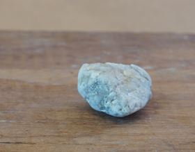
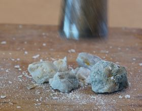
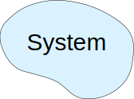
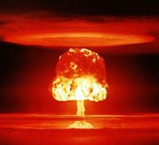
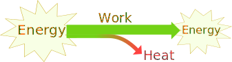

Conservation
Conservation: the idea that the total stays the same.
Conservation of Mass and Energy
Example: Stone Smash!
Before:
| 30.0g | stone |
After the Hammer:
| 25.0g | stone chunks | |
| 3.0g | stone fragments | |
| 1.8g | smashed away | |
| 0.2g | dust in air | |
| 30.0g | TOTAL |
There is still 30.0g, but now in different forms and places
Note that:
- some of the dust can float away so it may seem that mass gets lost
- or maybe some new dust arrives and settles on the crushed stone

So we also need the idea of an "isolated" or "closed" system, meaning that nothing transfers in or out, and no external force acts on it.
Conserved: the total stays the same (within a closed system).

Mass and Energy
At an atomic level Mass and Energy can be converted (E=mc2) so we should think of mass and energy together as being conserved.
But for everyday use it is OK to think of mass and energy separately.
Conservation of Energy
Energy can be in many forms! Fuel, coiled springs, height, motion and more.
Energy can go from one form to another, or to heat:

Heat is a type of energy, too. In fact (ignoring conversion to mass) the total amount of energy stays the same:
Energy can't be created or destroyed.
Energy is lost to a system when it leaves it. A battery loses energy when it powers a light. Our bodies lose heat all the time.
But when we say "energy is lost as heat" we really mean the energy is dissipated (spread out) into the environment, it is not gone from the Universe.
Conservation of Momentum
Momentum (both linear and angular) is also conserved. Here is an interesting little table for you:
| Conserved | Units |
|---|---|
| Mass | kg |
| Linear Momentum | kg m/s |
| Angular Momentum | kg m2/s |
| Energy | kg m2/s2 |
Electric charge is also conserved, and many other things are conserved under special conditions.
Summary
Conserved: the total stays the same (within a closed system).
Closed System: nothing transfers in or out, and no external force acts on it.
In our Universe:
- Mass is conserved (it can change form, be moved around, cut up or joined together, but the total mass stays the same over time)
- Energy is conserved (it also can change form, to light, to heat and so on)
- At an atomic level Mass and Energy can be converted via E=mc2, but nothing gets lost.
- Momentum and many other things are also conserved